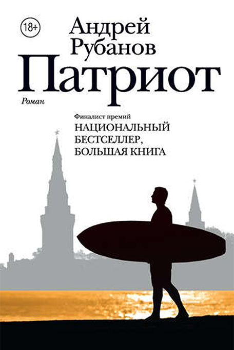

<!DOCTYPE html>
<html prefix="og: http://ogp.me/ns#"></html>
<head>
  <meta charset="utf-8"/>
  <meta name="viewport" content="width=device-width, initial-scale=1.0"/>
  <meta property="og:url" content="http://chernotrop.soshnikov.space/rubanov-patriot"/>
  <meta property="og:type" content="article"/>
  <meta property="og:title" content="О романе Андрея Рубанова «Патриот»"/>
  <meta property="og:description" content="Роман-победитель «Ясной Поляны» получился неоспоримо мастерским — плотно сбитым, монолитным, с великолепными диалогами и плавно перетекающим сюжетом"/>
  <meta property="og:image" content="http://chernotrop.soshnikov.space/img/rubanov-patriot-preview.jpg"/>
  <meta property="og:image:width" content="1200"/>
  <meta property="og:image:height" content="600"/>
  <link href="https://fonts.googleapis.com/icon?family=Material+Icons" rel="stylesheet"/>
  <link rel="stylesheet"/><!-- Yandex.Metrika counter --> <script type="text/javascript" > (function(m,e,t,r,i,k,a){m[i]=m[i]||function(){(m[i].a=m[i].a||[]).push(arguments)}; m[i].l=1*new Date();k=e.createElement(t),a=e.getElementsByTagName(t)[0],k.async=1,k.src=r,a.parentNode.insertBefore(k,a)}) (window, document, "script", "https://mc.yandex.ru/metrika/tag.js", "ym"); ym(56951962, "init", { clickmap:true, trackLinks:true, accurateTrackBounce:true, webvisor:true, trackHash:true }); </script> <noscript><div></div></noscript> <!-- /Yandex.Metrika counter -->
  <title>О романе Андрея Рубанова «Патриот»</title>
<link href="./css/style.bundle.css" rel="stylesheet"></head>
<body class="body_light">
  <header class="header header_dark">
    <div class="header__logo">
      <div class="logo logo_dark"><a class="logo__link" href="/">ЧЕРНОТРОП</a></div>
    </div>
    <nav class="header__menu"><a class="menu-item menu-item_active" href="index.html" target="blank">главная</a><a class="menu-item" href="contacts.html">контакты</a><a class="menu-item" href="http://ttttt.me/blacktrope" target="blank">telegram-канал</a>
    </nav>
    <div class="header__menu_mobile" id="modeValue"><a href="menu.html">
        <svg xmlns="http://www.w3.org/2000/svg" width="24px" height="24px" viewBox="0 0 24 24">
          <path d="M0 0h24v24H0z" fill="none"></path>
          <path class="icon_white" d="M3 18h18v-2H3v2zm0-5h18v-2H3v2zm0-7v2h18V6H3z"></path>
        </svg></a>
    </div>
  </header>
  <article class="article">
    <div class="article__header">
      <h1 class="article__headline">О романе Андрея Рубанова «Патриот»</h1>
      <p class="article__description">Роман-победитель «Ясной Поляны» получился неоспоримо мастерским — плотно сбитым, монолитным, с великолепными диалогами и плавно перетекающим сюжетом</p>
    </div>
    <div class="article__content">
      <div class="article__content-row">
        <div class="article__content-left">
          <p>Уже с первой части заметно, насколько большую работу проделал автор: любые темы, которых он касается по ходу действия, будь то бодибилдинг, премия GQ или сёрфинг, написаны со знанием дела. Взгляд не спотыкается ни о лишние слова, ни о непонятные вставки, за что стоит сказать отдельное спасибо редактору.</p>
          <p>После повального увлечения историческими романами в большую литературу постепенно возвращается актуальная повестка. Что ж, вдвойне радостно, что «Патриот» не боится говорить с нами о насущных проблемах: экономическом кризисе, войне, ДНР и рефлексии по девяностым. Рубанов блуждает между знаковыми вопросами эпохи, легко и свободно переключаясь на вечные темы взаимоотношений отцов и детей, мужчин и женщин, друзей и врагов через призму противоречивого главного героя, которому в любом случае симпатизируешь.</p>
        </div>
        <div class="article__content-right">
          <figure>
            <figcaption>Андрей Рубанов «Патриот». Издательство «АСТ», 2017. 440 с.</figcaption>
          </figure>
        </div>
      </div>
      <div class="article__content-row">
        <div class="article__content-left">
          <p>Отдельно хочется упомянуть концовку. Вибрирующая и напряжённая, она принадлежит тому типу развязок, которые проглатываешь целиком, забывая про время или естественные нужды. Дочитав её спустя два часа, ты несёшься в туалет и там, разглядывая кафельную плитку, думаешь: Охуеть. Вот это да. Вот так завернул…</p>
          <p>«Патриот» заслуженно выиграл «Ясную Поляну» и попал в финал «Большой книги». Открывая роман, первым делом боишься нарваться на что-то великодержавное, отдающее квашенной капустой и империалистической пропагандой, но «Патриот» написан в высшей степени корректно. Иногда даже чересчур корректно — натыкаясь на легко разрешаемые конфликты государственников и либералов, ловишь себя на мысли: в жизни обстановка гораздо истеричнее и жёстче. Но Рубанов намеренно заменяет жёсткость вопросами высшего порядка, из-за чего даже прототип Галицкого, обличённый автором, не кажется нам откровенно негативным персонажем.</p>
          <p>Да, такова жизнь. Возможно, нам просто нужно дожить до сорока восьми.</p>
          <p>Открывать патриотические магазины при этом необязательно.</p>
          <div class="article-author">⚒︎<br/><span></span><a href="https://soshnikov.space/" target="blank"><span>Артём Сошников</span></a></div>
          <div class="article-year"><span>Петроград</span>, <span>2017</span>
          </div>
        </div>
      </div>
    </div>
  </article>
<script type="text/javascript" src="./js/bundle.js"></script></body>